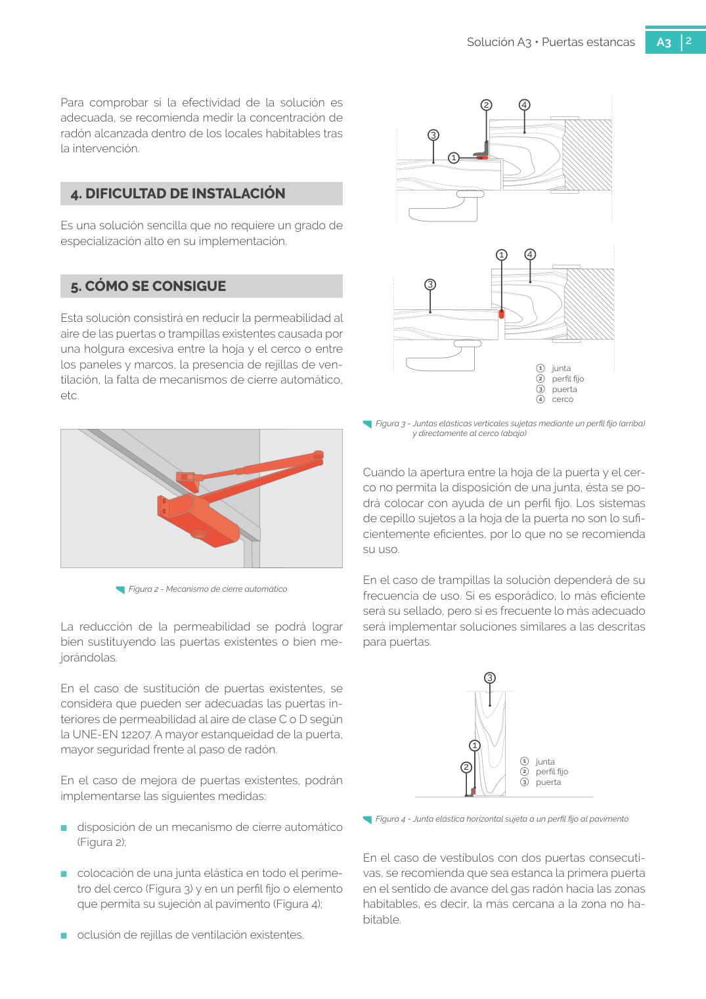

<!doctype html>
<html lang="es"><head><meta charset="utf-8">
<meta name="viewport" content="width=device-width, initial-scale=1">
<title>GUIA · Página física 2</title><link rel="stylesheet" href="../estilo.css">
</head><body>
<nav><a href="../index.html">Índice</a> › <a href="../doc/guia-pdf-9331dbd90a12-sin-fecha-2c714344d97c.html">GUIA</a></nav>

<h1>GUIA · Página física 2</h1>
<header class="meta"><p><strong>Solucion A3 Puertas estancas</strong> · edición sin-fecha · capa guia</p>
<p>Documento <code>GUIA-PDF-9331dbd90a12</code> · SHA-256 del PDF <code>2c714344d97ca6ec91d2b86a0134e36187d3f648d968039eb82045f16bb06f82</code></p>
<p>Página física 2 de 4.</p>
<p><a href="../../contenido/docs/GUIA-PDF-9331dbd90a12/sin-fecha__2c714344d97c/fuente.pdf#page=2">Copia fiel del PDF fuente</a> · <a href="https://www.codigotecnico.org/pdf/GuiasyOtros/GuiaRadon/Solucion_A3_Puertas_estancas.pdf">Fuente oficial</a></p>
<p><a href="https://www.codigotecnico.org/Guias/GuiaRadon.html">Ficha de la disposición en la fuente oficial</a></p>
<div class="cita"><p><a href="../../contenido/docs/GUIA-PDF-9331dbd90a12/sin-fecha__2c714344d97c/fuente.pdf#page=4">Créditos y autoría en el PDF fuente</a>. Reproducción con cita de fuente y autores.</p>
<p>Permiso literal: Se permite la reproducción total o parcial del contenido de este do­ Edición actual: septiembre 2020 cumento siempre y cuando se cite la fuente original y a sus autores.</p>
<details><summary>Leer los créditos completos y la autoría</summary><pre class="literal">                                                                    Solución A3 • Puertas estancas   A3  44


                                                                     Este documento ha sido elaborado por el Instituto de ciencias
                                                         de la construcción Eduardo Torroja (IETcc) bajo la supervisión
                                                         de la Dirección General de Agenda Urbana y Arquitectura del
                                                                             Ministerio de Transportes, Movilidad y Agenda Urbana (MITMA).

                                                             SECRETARÍA GENERAL DE
                                                  AGENDA URBANA                                                                     Y VIVIENDA                              MINISTERIO            GOBIERNO                                                                              El IETcc, perteneciente al Consejo Superior de Investigaciones                          DE                               TRANSPORTES,                                          MOVILIDAD
            DE ESPAÑA      Y                         AGENDA                                URBANA                                                        DIRECCIÓN                                                                GENERAL                                                                      DE
                                                  AGENDA URBANA Y ARQUITECTURA                   Científicas (CSIC), es el centro de investigación en edificación
                                                         de referencia en España. La Unidad de Calidad en la Construc­
                                                                       ción del IETcc asesora al MITMA en la elaboración del Código
                              MINISTERIO            GOBIERNO                         DE                               CIENCIA                                             Técnico de la Edificación que, desde el año 2019, cuenta con la            DE ESPAÑA                                E INNOVACIÓN
                                                                   sección HS6 Protección frente a la exposición al radón.

                                                                    Dirección y Coordinación:
                                                                            Ministerio de Transportes, Movilidad y Agenda Urbana
Esta ficha forma parte de una serie de documentos englobados        Isabel Marcos Anasagasti
en una misma publicación, cuyo objetivo es constituir una he­       Raquel Lara Campos
rramienta de ayuda para el diseño de soluciones de protección       Eduardo González de Prado
frente al radón:                                                                  Instituto de ciencias de la construcción Eduardo Torroja CSIC
                                                                                      Pilar Linares Alemparte
■  Guía de rehabilitación frente al radón

Fichas de soluciones:                                                 Autoras:
                                                                   Sonia García Ortega
A: De aislamiento del edificio                                                                                      Pilar Linares Alemparte
■       Solución A1. Barrera frente al radón
■       Solución A1-1. Barrera frente al radón. Encuentros              Colaboradoras:
■       Solución A2. Sellado de fisuras, grietas, encuentros y juntas         Virginia Sánchez Ramos
■       Solución A3. Puertas estancas                                   Karina Angélica García Pardo
■       Solución A4. Creación de sobrepresión
                                                                               Edita:
B: De reducción del radón antes de que penetre en los locales       Centro de Publicaciones Secretaría General Técnica
  a proteger                                                               Ministerio de Transportes, Movilidad y Agenda Urbana©

■       Solución B1. Ventilación del espacio de contención: cá­                                                                  Entidad colaboradora:
                 mara de aire                                                                Consejo Superior de Investigaciones Científicas · CSIC
■       Solución B2. Ventilación del espacio de contención: loca­                                                                             Ministerio de Ciencia e Innovación
                      les no habitables
■       Solución B3. Despresurización del terreno                        Catálogo de publicaciones de la Administración General
                                                                         del Estado: publicacionesoficiales.boe.es
C: De reducción del radón tras penetrar en los locales a proteger
■       Solución C1. Ventilación de los locales habitables                  Centro virtual de publicaciones del Ministerio de Transpor­
                                                                                         tes, Movilidad y Agenda Urbana: www.mitma.gob.es

Fichas de ejemplos:
                                                                     Página web del Código Técnico de la Edificación:
■      Ejemplo A1+B3. Barrera frente al radón + despresurización          www.codigotecnico.org
                    con red de tubos
■      Ejemplo A2+B1. Sellado + ventilación de la cámara sanitaria      Maquetación y diseño gráfico:
■      Ejemplo A2+B3. Sellado + despresurización con red de tubos       Lapizmente. Estrategia • Diseño Gráfico
■      Ejemplo A2+C1. Sellado + ventilación mecánica de los loca-                                                                     Los contenidos o ideas recogidas en este documento pertenecen a
                          les habitables                                   sus autores. Este documento está basado en el conocimiento dispo­
                                                                                    nible en el momento de su publicación. No se aceptará por las institu­
Publicación completa:                                                    ciones ni los autores implicados responsabilidad de ningún tipo por el
ISBN: 978-84-498-1045-9                                             uso de estas recomendaciones. Las figuras tienen carácter ilustrativo
NIPO: 796-20-136-5                                                   y no deben interpretarse como detalles constructivos.
1ª edición: septiembre 2020                                                               Se permite la reproducción total o parcial del contenido de este do­
Edición actual: septiembre 2020                                    cumento siempre y cuando se cite la fuente original y a sus autores.</pre></details></div>
<div class="aviso"><strong>Alcance y límites</strong><ul><li>Extracción automática sin revisión técnica humana completa. Contraste tablas, fórmulas, notas y excepciones con el PDF. La edición disponible no determina la vigencia ni la aplicabilidad a un proyecto.</li><li>Guia o documento divulgativo; no es texto normativo.</li><li>Extracción automática; el cotejo humano está pendiente.</li><li>Semántica y tablas no equivalen a validación exhaustiva.</li></ul></div></header>
<nav><a href="guia-pdf-9331dbd90a12-sin-fecha-2c714344d97c__p0001.html">← Página 1</a> · <a href="guia-pdf-9331dbd90a12-sin-fecha-2c714344d97c__p0003.html">Página 3 →</a></nav>
<p>Formato: <a href="../../contenido/docs/GUIA-PDF-9331dbd90a12/sin-fecha__2c714344d97c/pagina/p0002.md">Texto de la página (Markdown)</a></p>
<p><a href="../../contenido/docs/GUIA-PDF-9331dbd90a12/sin-fecha__2c714344d97c/bloque/p0002.json">JSON de bloques</a></p>
<pre class="literal">2
Solución A3 • Puertas estancas
A3
2
Para comprobar si la efectividad de la solución es 
adecuada, se recomienda medir la concentración de 
radón alcanzada dentro de los locales habitables tras 
la intervención.
4. DIFICULTAD DE INSTALACIÓN
Es una solución sencilla que no requiere un grado de 
especialización alto en su implementación.
5. CÓMO SE CONSIGUE
Esta solución consistirá en reducir la permeabilidad al 
aire de las puertas o trampillas existentes causada por 
una holgura excesiva entre la hoja y el cerco o entre 
los paneles y marcos, la presencia de rejillas de ven­
tilación, la falta de mecanismos de cierre automático, 
etc.
  Figura 2 - Mecanismo de cierre automático
La reducción de la permeabilidad se podrá lograr 
bien sustituyendo las puertas existentes o bien me­
jorándolas.
En el caso de sustitución de puertas existentes, se 
considera que pueden ser adecuadas las puertas in­
teriores de permeabilidad al aire de clase C o D según 
la UNE-EN 12207. A mayor estanqueidad de la puerta, 
mayor seguridad frente al paso de radón.
En el caso de mejora de puertas existentes, podrán 
implementarse las siguientes medidas:
	
■
disposición de un mecanismo de cierre automático 
(Figura 2);
	
■
colocación de una junta elástica en todo el períme­
tro del cerco (Figura 3) y en un perfil fijo o elemento 
que permita su sujeción al pavimento (Figura 4);
	
■
oclusión de rejillas de ventilación existentes.
1  	 junta
2 	 perfil fijo
3 	 puerta
4 	 cerco
  Figura 3 - Juntas elásticas verticales sujetas mediante un perfil fijo (arriba) 
y directamente al cerco (abajo)
1
3
2
3
1
Cuando la apertura entre la hoja de la puerta y el cer­
co no permita la disposición de una junta, ésta se po­
drá colocar con ayuda de un perfil fijo. Los sistemas 
de cepillo sujetos a la hoja de la puerta no son lo sufi­
cientemente eficientes, por lo que no se recomienda 
su uso.
En el caso de trampillas la solución dependerá de su 
frecuencia de uso. Si es esporádico, lo más eficiente 
será su sellado, pero si es frecuente lo más adecuado 
será implementar soluciones similares a las descritas 
para puertas.
  Figura 4 - Junta elástica horizontal sujeta a un perfil fijo al pavimento
1   	junta
2 	 perfil fijo
3 	 puerta
3
2
1
En el caso de vestíbulos con dos puertas consecuti­
vas, se recomienda que sea estanca la primera puerta 
en el sentido de avance del gas radón hacia las zonas 
habitables, es decir, la más cercana a la zona no ha­
bitable.
</pre>
<figure><a href="../../contenido/docs/GUIA-PDF-9331dbd90a12/sin-fecha__2c714344d97c/figura/p0002.png"></a><figcaption>Página visual 2, para contrastar fórmulas, tablas y figuras.</figcaption></figure><h2>Tablas extraídas</h2><p>Datos candidatos: compruebe celdas y notas en el PDF.</p><ul><li><a href="../../contenido/docs/GUIA-PDF-9331dbd90a12/sin-fecha__2c714344d97c/tabla/p0002_t01.json">p0002_t01.json</a></li></ul>
<h2>Segmentos que incluyen esta página</h2><ul>
<li><a href="../apartado/guia-pdf-9331dbd90a12-sin-fecha-2c714344d97c__a0005.html">a0005 · 2. CUÁNDO SE UTILIZA</a></li>
<li><a href="../apartado/guia-pdf-9331dbd90a12-sin-fecha-2c714344d97c__a0006.html">a0006 · 4. DIFICULTAD DE INSTALACIÓN</a></li>
<li><a href="../apartado/guia-pdf-9331dbd90a12-sin-fecha-2c714344d97c__a0007.html">a0007 · 5. CÓMO SE CONSIGUE</a></li>
<li><a href="../apartado/guia-pdf-9331dbd90a12-sin-fecha-2c714344d97c__a0008.html">a0008 · 1  	 junta 2 	 perfil fijo</a></li>
<li><a href="../apartado/guia-pdf-9331dbd90a12-sin-fecha-2c714344d97c__a0009.html">a0009 · 3 	 puerta 4 	 cerco</a></li>
<li><a href="../apartado/guia-pdf-9331dbd90a12-sin-fecha-2c714344d97c__a0010.html">a0010 · 3 	 puerta</a></li>
</ul>
<footer>Generado estáticamente desde el corpus normalizado; sin JavaScript ni servicios externos. El HTML es una vista reproducible; conserve la fuente y la edición al citar.</footer>
</body></html>
